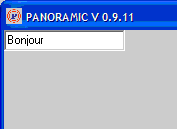

PANORAMIC: IMPRIMER DANS UN OBJET AVEC PRINT
PAGE PRINCIPALE /PAGE TUTORIELS
Il est possible d'imprimer dans un objet système avec la commande Basic PRINT.
Commande PRINT_TARGET_IS
Pour imprimer dans un objet système avec la commande Basic PRINT, il faut au préalable avoir effectué la commande PRINT_TARGET_IS N ,N étant le numéro de l'objet système.
PRINT_TARGET_IS N désigne l'objet système numéro N comme le récepteur des impressions faites avec PRINT
Exemple
|
edit 1 : rem on crée l'objet système numéro 1 print_target_is 1 : rem on le désigne comme récepteur des impressions print "Bonjour" : rem on imprime dans l'EDIT avec PRINT...
|
Résultat
Voici ce qu'on obtient en exécutant l'exemple:

Objets systèmes sur lesquels on peut imprimer avec PRINT:
On peut utiliser les objets système:
SCENE3D
EDIT
MEMO
COMBO
FORM
LIST
PICTURE
Mise à jour : 10 Novembre 2008